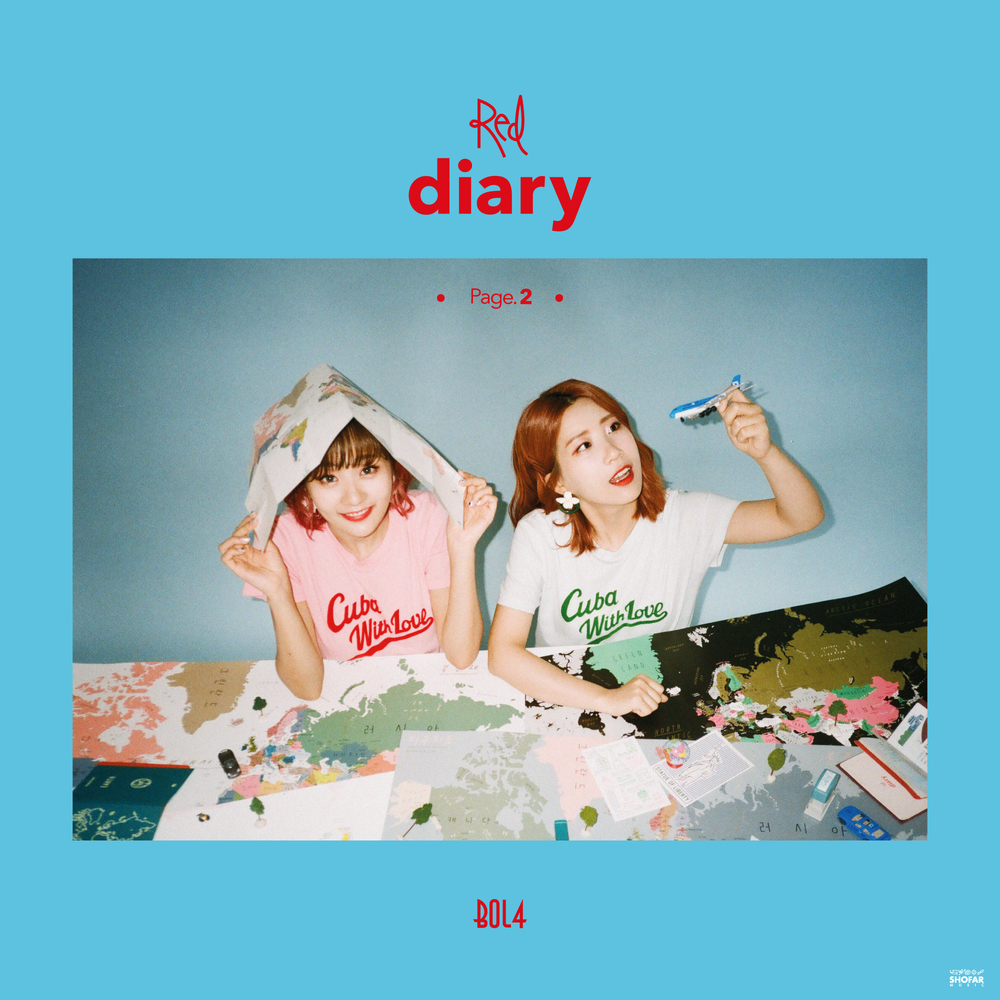

안녕하세요, 라보엠입니다.
더운 여름이 왔습니다. 더운 건 싫지만 여름에는 휴가가 있죠. 오늘은 여름 휴가에 가장 잘 어울리는 노래 볼빨간사춘기의 대표곡 ‘여행’을 소개하겠습니다. 이 노래는 2018년 5월 발매된 미니앨범 [Red Diary Page.2]의 타이틀곡으로, 바쁘고 숨 막히는 일상 속에서 어디론가 훌쩍 떠나고 싶은 청춘의 마음을 담아낸 곡입니다. 볼빨간사춘기 특유의 상큼함과 통통 튀는 에너지가 가득한 이 노래는, 듣는 이로 하여금 당장이라도 여행을 떠나고 싶게 만드는 마법 같은 힘을 가지고 있습니다.

볼빨간사춘기 여행 노래의 탄생
‘여행’은 안지영이 직접 작사·작곡에 참여했고, 바닐라맨(바닐라어쿠스틱)이 편곡을 맡아 완성도를 높였습니다. 트로피컬 하우스의 청량한 분위기와 팝 록의 경쾌함이 자연스럽게 어우러져, 여름과 가장 잘 어울리는 곡으로 손꼽힙니다. 도입부의 밝은 기타 리프와 리드미컬한 드럼, 그리고 후렴구의 시원한 멜로디가 곡 전체를 이끌어가며, 자유롭게 날아다니는 새처럼 청춘의 설렘을 표현합니다.이 노래는 특히 여름철 휴가, 드라이브, 산책 등 다양한 순간에 어울리는 곡으로 사랑받고 있습니다. 청춘의 자유와 설렘, 그리고 잠시 일상을 떠나 새로운 세상을 만나는 기쁨을 노래하는 이 곡은, 듣는 이로 하여금 당장이라도 가방을 싸고 어디론가 떠나고 싶은 충동을 불러일으킵니다.
‘여행’은 볼빨간사춘기가 기존의 어쿠스틱 기반 사운드에서 한 단계 더 나아가, 록과 팝, 트로피컬 하우스 등 다양한 장르적 시도를 보여준 작품입니다. 이 곡을 통해 볼빨간사춘기는 음악적 스펙트럼을 넓히며, 더욱 성숙해진 모습을 선보였습니다. 실제로 발매 당시 음원차트 정상에 오르며, 많은 이들의 플레이리스트에 오랫동안 머물렀습니다.
볼빨간사춘기 여행 노래 가사에 담긴 청춘의 메시지
저 오늘 떠나요 공항으로
핸드폰 꺼 놔요
제발 날 찾진 말아줘
시끄럽게 소리를 질러도
어쩔 수 없어 나
가볍게 손을 흔들며 Bye bye
쉬지 않고 빛났던
꿈같은 My youth
이리저리 치이고
또 망가질 때쯤
지쳤어 나 미쳤어 나
떠날 거야 다 비켜
I fly away
Take me to London Paris
New york city들
아름다운 이 도시에 빠져서 나
Like I'm a bird bird
날아다니는 새처럼
난 자유롭게 Fly fly 나 숨을 쉬어
Take me to new world
Anywhere 어디든
답답한 이곳을 벗어나기만 하면
Shining light light
빛나는 My youth
자유롭게 Fly fly 나 숨을 쉬어
저 이제 쉬어요 떠날 거예요
노트북 꺼 놔요
제발 날 잡진 말아줘
시끄럽게 소리를 질러도
어쩔 수 없어 나
가볍게 손을 흔들며 See ya
쉬지 않고 빛났던
꿈같은 My youth
이리 저리 치이고
또 망가질 때쯤
지쳤어 나 미쳤어 나
떠날 거야 다 비켜
I fly away
Take me to London Paris
New york city들
아름다운 이 도시에 빠져서 나
Like I'm a bird bird
날아 다니는 새처럼
난 자유롭게 Fly fly 나 숨을 쉬어
Take me to new world
Anywhere 어디든
답답한 이곳을 벗어나기만 하면
Shining light light
빛나는 My youth
자유롭게 Fly fly 나 숨을 쉬어
I can fly away fly
Always always always
Fly away
Take me to new world
Anywhere 어디든
답답한 이곳을 벗어나기만 하면
Shining light light
빛나는 My youth
자유롭게 Fly fly 나 숨을 쉬어
이 곡의 가사는 답답한 현실에서 벗어나 어디든 떠나고 싶은 마음, 그리고 그 과정에서 느끼는 해방감과 설렘을 솔직하게 담아냅니다.
- “저 오늘 떠나요 공항으로, 핸드폰 꺼 놔요 제발 날 찾진 말아줘”
- “쉬지 않고 빛났던 꿈같은 my youth, 이리저리 치이고 또 망가질 때쯤”
- “Take me to London, Paris, New York city들 아름다운 이 도시에 빠져서 나”
- “Like I'm a bird bird, 날아다니는 새처럼 난 자유롭게 fly fly”
이처럼 ‘여행’의 가사는 반복되는 일상에 지친 이들에게 잠시 멈춰서 자신만의 시간을 갖고, 새로운 세상으로 한 걸음 내딛기를 응원합니다. “Shining light light, 빛나는 my youth”라는 구절에서는 청춘의 찬란함과 자유로움을 노래하며, 듣는 이의 마음을 환하게 밝혀줍니다.
‘여행’은 볼빨간사춘기 특유의 밝고 경쾌한 음색이 돋보이는 곡입니다. 안지영의 청량한 보컬과, 곡 전체를 감싸는 긍정적인 에너지가 어우러져 듣는 이로 하여금 자연스럽게 미소 짓게 만듭니다. 특히 후렴구에서 반복되는 “I fly away”와 “자유롭게 fly fly”는, 누구나 한 번쯤 꿈꿔봤을 자유로운 여행의 순간을 상상하게 합니다.
맺음말
볼빨간사춘기의 ‘여행’은 자유와 설렘, 그리고 청춘의 찬란함을 가장 솔직하고 상큼하게 담아낸 곡입니다. 반복되는 일상에 지쳐 있다면, 이 노래와 함께 마음속 여행을 떠나보는 건 어떨까요? ‘여행’이 여러분의 하루에 작은 위로와 활력을 선물해주길 바랍니다.